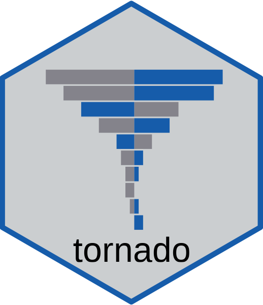
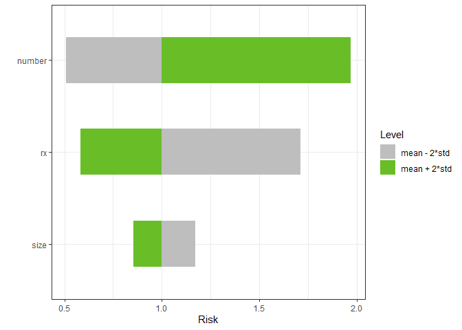

|  |
| Actions | Code Coverage | Website | Downloads | CRAN |
|---|---|---|---|---|
tornado plots for model sensitivity analysis.
Installation
You can also install the development version of tornado from github with:
if (!require(devtools)) install.packages("devtools")
devtools::install_github("bertcarnell/tornado")Quick Start - Torndao Plots
Linear Models
lm1 <- lm(mpg ~ cyl*wt*hp, data = mtcars)
torn1 <- tornado(lm1, type = "PercentChange", alpha = 0.10)
plot(torn1, xlabel = "MPG", geom_bar_control = list(width = 0.5))
Generalized Linear Models
Plots can also be created for the range of the input data
glm2 <- glm(vs ~ wt + disp + cyl, data = mtcars, family = binomial(link = "logit"))
torn2 <- tornado(glm2, type = "ranges", alpha = 0.10)
plot(torn2, xlabel = "Probability of Straight Engine", geom_bar_control = list(width = 0.5))
Plots can include factors and percentiles of the data as well.
mydata <- mtcars
mydata$am <- factor(mtcars$am)
mydata$vs <- factor(mtcars$vs)
glm2 <- glm(mpg ~ wt + cyl + am + vs, data = mydata, family = gaussian)
torn2 <- tornado(glm2, type = "percentiles", alpha = 0.10)
plot(torn2, xlabel = "MPG",
geom_bar_control = list(width = 0.5),
sensitivity_colors = c("#E41A1C", "#377EB8"),
geom_point_control = list(fill = "red", col = "red", size = 3))
Censored Data
Accelerated Failure Model
survreg3 <- survival::survreg(survival::Surv(futime, fustat) ~ ecog.ps + rx + age + resid.ds,
survival::ovarian, dist = 'weibull', scale = 1)
torn3 <- tornado(survreg3, modeldata = survival::ovarian, type = "PercentChange", alpha = 0.10)
plot(torn3, xlabel = "Survival Time", geom_bar_control = list(width = 0.5))
Cox Proportional Hazard Model with 2 Standard Deviation bars
coxph4 <- survival::coxph(survival::Surv(stop, event) ~ rx + size + number,
survival::bladder)
torn4 <- tornado(coxph4, modeldata = survival::bladder, type = "StdDev",
alpha = 2)
plot(torn4, xlabel = "Risk", geom_bar_control = list(width = 0.5))
Machine Learning Models from caret::train
The plot method can also return a ggplot object
mydat <- mtcars
mydat$am <- factor(mydat$am, labels = c("A", "M"))
mydat$vs <- factor(mydat$vs, labels = c("V", "S"))
mydat$cyl <- factor(mydat$cyl)
mydat$gear <- factor(mydat$gear)
mydat$carb <- factor(mydat$carb)
gtest <- caret::train(x = subset(mydat, select = -vs), y = mydat$vs, method = "rf")
torn <- tornado(gtest, type = "percentiles", alpha = 0.10, class_number = 1)
g <- plot(torn, plot = FALSE, xlabel = "Probability of Class V-shaped Engine", geom_bar_control = list(width = 0.5))
g <- g + ggtitle("Classifier caret::train randomforest, 90-110% of the mean in each variable")
plot(g)